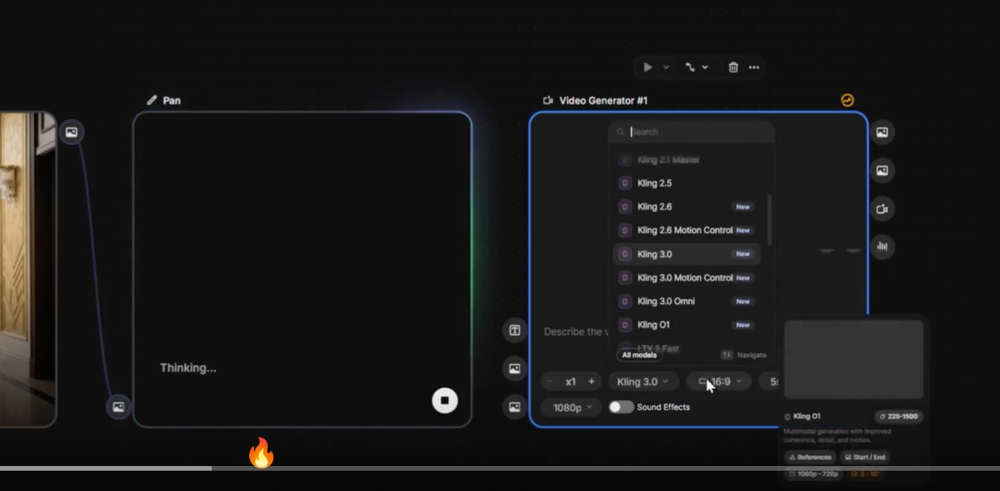
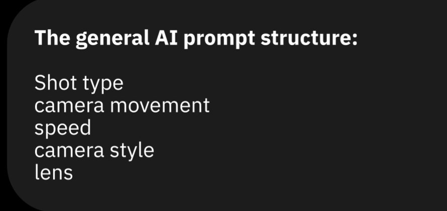
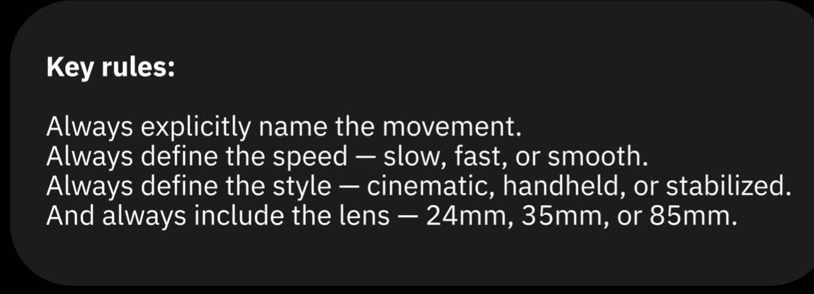

🎨 Paletas Emocionais
Cor é o primeiro sinal que o cérebro recebe de uma imagem. Antes de reconhecer um rosto, uma forma ou uma ação, o sistema visual processa temperatura e saturação. Isso significa que a paleta de cores de um filme comunica emoção antes de qualquer outro elemento.

Paleta definida — a temperatura de cor dominante comunica o estado emocional da cena antes de qualquer ação

A mesma cena com paleta diferente produziria emoção completamente diferente — a cor define o tom
🎨 O Mapa das Cores e Emoções
Âmbar / Laranja
Intimidade, nostalgia, perigo, calor humano
Azul / Teal
Frieza, distância, solidão, suspense, profissional
Verde
Natureza, esperança, doenças (tons doentios), fuga
Vermelho
Paixão, perigo, sangue, urgência, amor/ódio
Roxo
Mistério, royalty, sobrenatural, ambiguidade
Cinza / Dessaturado
Morte, vazio, depressão, pós-apocalipse, passado
💡 Definindo Paleta no Prompt
- •
"warm amber and orange palette, intimate and nostalgic mood" - •
"cold desaturated blue tones, isolation and melancholy" - •
"high contrast, black and red palette, danger and urgency" - •
"monochromatic gray palette, desaturated, post-apocalyptic atmosphere"
☀️ Tipos de Iluminação
A iluminação de um filme não é apenas sobre "ver" os personagens — é sobre decidir o que o espectador sente ao vê-los. Cada tipo de iluminação carrega um gênero, uma época e uma emoção que o espectador reconhece intuitivamente de toda uma vida assistindo cinema.
Luz Natural / Realista
Luz do sol em diferentes horários — manhã suave, meio-dia duro, final do dia dourado. Cria autenticidade e imersão. Associada ao drama íntimo, cinema independente, documentários.
Prompts: "soft natural morning light, realistic, documentary-style"
Luz Dramática / Chiaroscuro
Contraste extremo entre luz e sombra. Uma única fonte de luz forte enquanto o resto está no escuro. Cria tensão, mistério e peso. Associado a thrillers, noirs, dramas intensos.
Prompts: "chiaroscuro lighting, single harsh light source, deep shadows, dramatic contrast"
Luz Artificial / Neon
Luzes de néon, lâmpadas de sódio, telas e monitores. Define época e gênero imediatamente — cyberpunk, noir moderno, thriller urbano noturno. Cores saturadas em ambiente escuro.
Prompts: "neon lights reflecting on wet pavement, urban noir, magenta and cyan glow"
Silhueta
Personagem completamente escuro contra fundo iluminado. Elimina toda informação facial — cria mistério, anonimato, poder ou ameaça. Um dos recursos visuais mais impactantes e icônicos do cinema.
Prompts: "silhouette of figure against bright sunset, anonymous, powerful composition"
🌫️ Atmosfera em Prompts
Certas palavras-chave atmosféricas são verdadeiros atalhos visuais — elas ativam pacotes completos de informação estética nos modelos de IA, porque foram treinados em milhões de imagens com essas descrições. Uma palavra carrega uma estética inteira.
🌫️ Dicionário de Atmosferas Cinematográficas
"golden hour"
Luz quente lateral, sombras longas, tons âmbar, romantismo e nostalgia
"blue hour"
Crepúsculo azulado antes do pôr do sol total, melancolia e transição
"foggy morning"
Névoa suave, luz difusa, mistério tranquilo, mundo em suspensão
"neon noir"
Noite chuvosa, luzes coloridas refletidas, cidade sombria e vibrante
"overcast flat light"
Nuvens cobrindo o sol, luz uniforme sem sombras, realismo frio
"dramatic storm"
Nuvens escuras, luz contrastante, tensão climática, instabilidade
"harsh midday sun"
Luz dura vertical, sombras curtas, calor, faroeste, desolação
"candlelight"
Luz quente e tremulante, intimidade extrema, época histórica, ritual
💡 Combinando Atmosferas
As atmosferas funcionam melhor combinadas com o tipo de cena e a emoção-alvo:
- •
"foggy morning, blue hour, lone figure, melancholic"— solidão contemplativa - •
"golden hour, warm light, two people, intimate close-up"— conexão emocional - •
"neon noir, rain-slicked streets, dramatic storm, chasing scene"— tensão urbana
🎭 Color Grading
Color grading é o processo de ajustar as cores de um filme na pós-produção para criar uma estética visual coesa e intencional. É o que faz filmes da A24 parecerem A24, produções da Netflix parecerem Netflix. A mesma cena, com grades diferentes, conta histórias completamente diferentes.
🎭 Looks de Color Grading Famosos
Pele laranja, sombras teal. O look mais popular de blockbusters dos anos 2010. Cria separação dramática entre personagem e ambiente.
Prompt: "cinematic teal and orange color grade, Hollywood blockbuster look"
Dessaturado com um tom específico (muitas vezes verde-azulado ou âmbar frio), textura de grão de filme. Realismo elevado, introspectivo.
Prompt: "A24 film aesthetic, muted colors, film grain, intimate drama"
Preto e branco de alto contraste (ou cor muito dessaturada), sombras profundas. Suspense, crime, ambiguidade moral.
Prompt: "black and white film noir, high contrast, deep shadows, 1940s cinema"
Paleta pastel muito específica e simétrica, tons rosados e amarelos. Estética única e reconhecível globalmente.
Prompt: "Wes Anderson style, pastel color palette, symmetrical composition, quirky"
🌑 Contraste e Sombra
"A sombra é mais poderosa que a luz" — essa frase resume um dos princípios mais profundos da cinematografia. O que você não ilumina frequentemente comunica mais do que o que você ilumina. Sombra é ausência, mistério, o desconhecido.

Alto contraste — a sombra define o drama tanto quanto a luz, criando profundidade e tensão

Sombras profundas e luz direcional — o jogo entre revelação e ocultamento narrativo
🌑 Ratio de Luz e Sombra
💡 Prompts de Contraste e Sombra
- •
"extreme low key lighting, deep shadows, single spotlight, high contrast" - •
"half face in shadow, dramatic Rembrandt lighting, intense portrait" - •
"long dramatic shadows, late afternoon sun, desert landscape" - •
"silhouette against glowing window, mystery, backlit"
💡 Luz como Personagem
O nível mais avançado do uso da luz no cinema: quando a iluminação conta a história sozinha, sem precisar de atores ou diálogos. A luz que entra, que some, que muda de direção — cada uma dessas mudanças é um evento narrativo em si mesma.
💡 Exemplos de Luz Narrativa
Luz que diminui gradualmente
Uma janela que vai escurecendo enquanto o personagem está sentado imóvel. Narrativa: o tempo passa, a esperança diminui, um dia se encerra. Sem uma palavra ou movimento do personagem.
Luz que pisca
Uma lâmpada que falha ritmicamente. Narrativa: instabilidade, presença perturbadora, sistema que colapsa, ameaça iminente. Usada em horror e thriller com efeito imediato.
God rays (raios de luz)
Raios de luz cortando a escuridão através de névoa ou fumaça. Narrativa: esperança, revelação, chegada do divino, momento de transformação. Poderoso em fechamentos de arco.
Luz que se apaga de uma vez
Corte para negro súbito enquanto a luz desaparece. Narrativa: morte, decisão irreversível, ponto sem retorno, conclusão. Um dos finais mais impactantes que existem.
💡 Prompts de Luz Narrativa
- •
"god rays breaking through dark storm clouds, hope emerging" - •
"flickering neon light casting uneasy shadows, ominous atmosphere" - •
"single shaft of light cutting through complete darkness" - •
"light slowly fading as sun sets, room going dark, solitude"
✅ Resumo do Módulo 1.4
Próximo Módulo:
1.5 — Som como Personagem: por que o áudio vale metade do filme e como planejar trilha, SFX e silêncio junto com as imagens